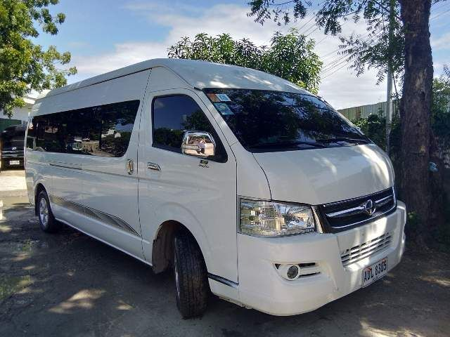

가족여행 강의 - 현지교통

가족여행 현지 교통 특징 및 팁
공항에서 보라카이 섬까지 이동
- 어린이 및 노약자 동반 시 카티클란 공항(MPH) 이용 추천 (이동 시간 단축)
- 칼리보 공항(KLO) → 전용 차량 + 배 이동 (2~3시간 소요)
- 공항-리조트 이동 시 패밀리 전용 차량 옵션 확인 (더 편안한 이동 가능)
보라카이 섬 내 이동
- 가족 단위 이동 시 트라이시클보다는 전용 밴 이용 추천
- 아이들과 함께 이동 시 전동 트라이시클 이용 가능
- 숙소에서 제공하는 리조트 셔틀 서비스 활용 가능 여부 확인
가족여행 시 교통 이용 팁
- 노약자 및 유아 동반 시 이동 거리 최소화, 가급적 중심가 숙소 선택
- 트라이시클 이용 시 안전벨트 확인, 어린이 보호 필수
- 아이들을 위한 수하물, 유모차 이동 계획 미리 세우기